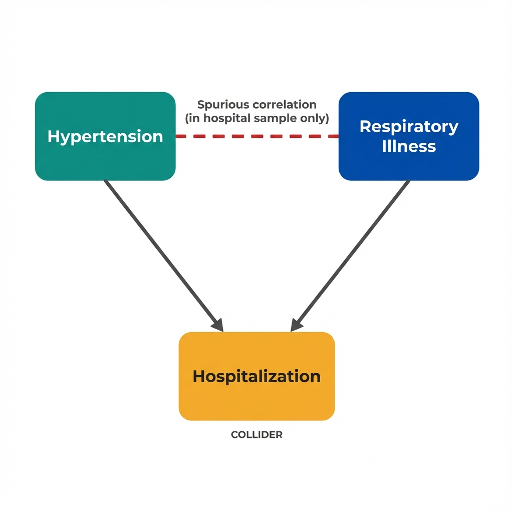

The Data
A researcher studies whether high blood pressure (hypertension) is associated with respiratory illness. In the general population, these conditions are unrelated. But in hospital patient records, they appear strongly correlated. (Data are simulated for illustration.)
Hypertension Severity vs Respiratory Illness
Next: Why does limiting to hospitalized patients create a correlation that doesn't exist in the population? The answer involves a concept called a "collider."
What Is a Collider?
A collider is a variable that is caused by two other variables. Conditioning on a collider (selecting, stratifying, or adjusting for it) creates a spurious association between its causes, even when they're truly independent.

Hospitalization is a "collider" because two independent causes point into it. Conditioning on it opens a backdoor path.
The Collider Principle
When you condition on a common effect of two variables, you create a statistical association between those variables, even if they were independent in the full population.
This happens because:
- Selection into your sample depends on having at least one of the causes
- Knowing the value of one cause tells you something about the likely value of the other (among selected individuals)
- The association is real in your data, but it doesn't exist in the population you want to generalize to
Next: Let's see exactly how this works with a concrete hospital example, step by step.
Hospital Example: Why Selection Matters
Imagine 1,000 people in the general population. Hypertension and respiratory illness are completely independent (correlation = 0). Each condition independently increases hospitalization risk. Watch what happens when we restrict to hospitalized patients only.
General Population
Hospital Database
Why Does This Happen?
Among hospitalized patients:
- If someone has mild hypertension and they're still hospitalized, they probably have something else wrong (like severe respiratory illness)
- If someone has severe hypertension, that alone explains their hospitalization, so their respiratory status can be anything (including healthy)
- This "explaining away" creates a negative correlation that exists only in the selected sample
The hospital selects people who are sick enough on at least one dimension. Among those selected, the two dimensions become negatively correlated.
Next: How do we recognize collider bias in practice, and what can we do about it?
Recognizing and Avoiding Collider Bias
Collider bias is subtle because the patterns look real in your data. The correlation is statistically significant. The challenge is recognizing that your sample selection created the pattern.
Draw a DAG Before Analyzing
Before controlling for any variable, ask: "Could this be caused by both my exposure and my outcome?" If arrows point INTO the variable from both, it's a collider. Don't condition on it.
Understand Your Selection Process
Why are people in your database? Hospital records, insurance claims, and registry data all involve selection. If both exposure and outcome affect selection, you likely have collider bias.
Sensitivity Analysis
Test whether your results hold if you change the sample. If restricting to a subgroup reverses or magnifies the association, collider bias may be operating.
Population-Based Data
When possible, use samples that don't select on your outcome's causes. Population surveys, birth cohorts, and random samples avoid many selection problems.
Controlling for Consequences
Never control for variables that happen after your exposure or outcome. Mediators and downstream consequences are especially dangerous sources of collider bias.
Case-Only Designs Without Caution
Studying only hospitalized patients, only those with a diagnosis, or only those who survived an event restricts your sample based on a potential collider.
Common Colliders in Health Research
Next: What's the key takeaway for researchers working with healthcare databases?
Key Insight
The patterns in your database are real, but they may not exist in the population you care about. Understanding why people are in your data is as important as understanding what the data show.
Conditioning on a collider opens a backdoor path between otherwise independent variables, creating spurious correlation.
Questions Economists Ask About Healthcare Data
Key Takeaway
Conditioning on a collider creates spurious correlation between otherwise independent variables. When your sample is selected based on a common effect of exposure and outcome, associations can appear, disappear, or reverse compared to the general population. Hospital databases, insurance claims, and survival analyses are especially vulnerable. Before analyzing, draw a DAG and ask: "Is my sample restriction a collider?" This is what economists mean by "selection bias from conditioning on a common effect."